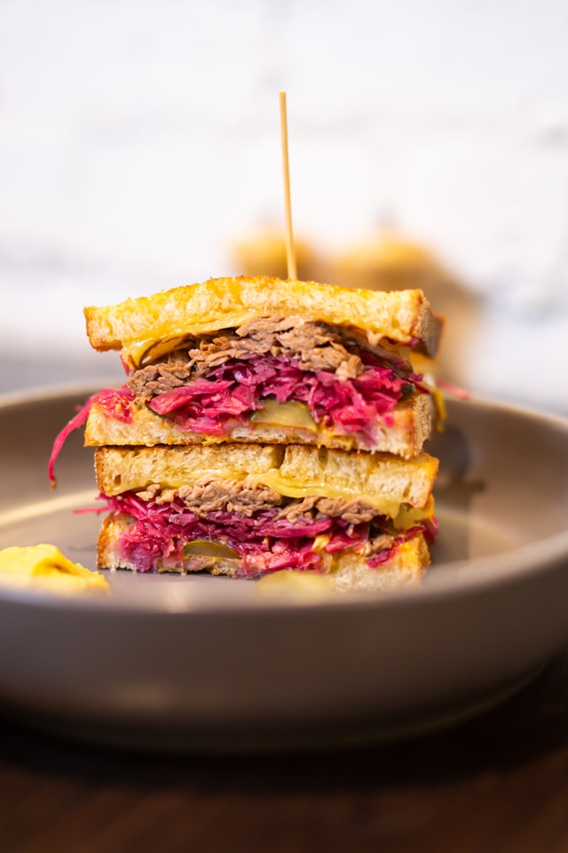

Home
Reuben

Description
Make this iconic Reuben sandwich the traditional way - an irresistible blend of corned beef, sauerkraut, cheese and sauce - or opt for pastrami if you prefer
Ingredients
- 8 slices corned beef
- 100g gruyère
- sliced
- 4 tbsp butter
- softened
- 8 thick slices rye bread
- 75g white sauerkraut
Steps
- Mix all the ingredients for the mayonnaise, except the lemon juice, together in a bowl. Season to taste with the lemon juice, salt, and pepper.
- Heat the grill to high. Line a baking tray with baking parchment and arrange the corned beef into four piles on it, then top with the cheese and grill until melted and bubbling.
- Butter both sides of all the bread slices. Heat a frying pan over a medium heat and toast the bread slices on both sides until golden. Generously spread the mayonnaise over one side of each bread slice. Top four of the slices, mayonnaise-side up, with the cheese-topped corned beef and the sauerkraut, then sandwich with the remaining bread slices, mayonnaise-side down. Secure with cocktail sticks, then slice in half to serve.